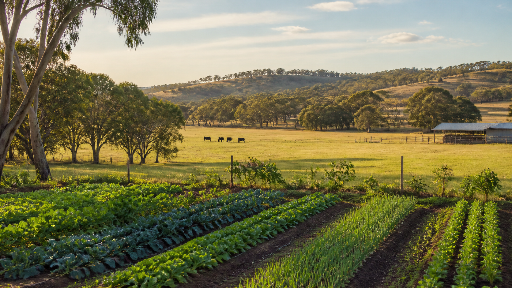

1. Learn
Read the named theory section, use its learning map and open the authorised visuals when you need detail.
Stage 5 Agricultural Technology · 2026
Learn through four connected enterprises: introduction to agriculture, vegetable production, beef production and poultry production.

Stage 5 Agricultural Technology
Learn through four connected enterprises: introduction to agriculture, vegetable production, beef production and poultry production.
How the course works
Each two-week module contains three source-grounded theory sections, thirty checks and written evidence.
Read the named theory section, use its learning map and open the authorised visuals when you need detail.
Answer the questions and use hints to return to the precise theory section.
Complete written responses that explain the current agricultural ideas and decisions.
Save or print the work, then organise the strongest evidence in the twelve-card folio.
Student evidence. Browser autosave is device-local preparation, not cloud storage or submission. Follow current teacher directions for practical work and formal submission.
How the course works
Each two-week module contains three source-grounded theory sections, exactly ten student-learning questions for each named section and written evidence that autosaves on this browser and device.
Use the named section, its learning map and the linked authorised source. Open visuals larger when you need detail.
Answer thirty questions per module. Hints direct you back to the precise theory section without revealing the answer.
Complete written responses, save or print them, then organise your strongest work in the twelve-card folio.
Student destinations
Twelve evidence cards, optional photo records, autosave, backup and Print / Save PDF.
Open folio →Twenty-one authentic activities using varied mechanics across every named module topic.
Open Busy Work →Eleven validated, purpose-linked clips with privacy-enhanced playback and fallbacks.
Open YouTube library →Confirmed 2026 task timing, weightings and authoritative documents, with conflicts made visible.
Open assessment pathway →Learn to read the supplied cattle-handling diagrams and see the missing-plan boundary.
Open plans and diagrams →Open the verified 2026 program sources, scope and sequence and assessment documents.
Open Teacher Resources →Course pathway
The sequence follows the 2026 whole-year scope and term programmes. Teacher timetabling and practical conditions still control the day-to-day pace.
Current 2026 syllabus
The course provides learning opportunities across AG5-1 to AG5-14. Outcome codes are shown for curriculum transparency and are never used as quiz content. The 2024 syllabus begins implementation from 2027 unless the school formally confirms early adoption.
Students explain agricultural systems, plant and animal structure and function, management, sustainability, technology and market connections.
Students investigate, communicate, calculate, evaluate and participate safely in teacher-authorised agricultural activities.
Open current 2019 NSW syllabus ↗ Open 2024 planning syllabus ↗